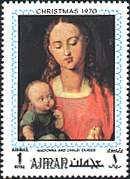
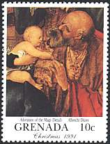
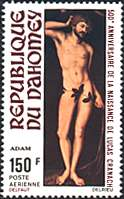
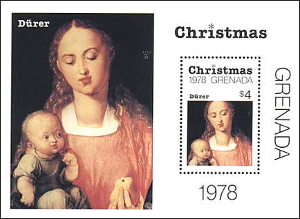
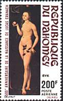
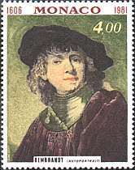
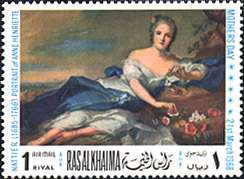
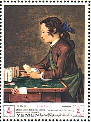

Offices Gallery, Florence. Great Foreign Masters on Stamps
← Recently Modernized Pages · Art Gallery · Home
|
 |
 |
|
| Uffizi Gallery, Florence | ||
| Foreign Masters | ||
Hall 20. Lucas Cranach (1472-1553). Adam and Eve, 1528. Lucas Cranach differs from his contemporary Dürer by his more direct relationship with the Gothic and expressionist tradition that characterizes the German Art. His figures show a more nervous stretching of animated forms, through a delicate and shiver sensuality.
 |
 |
 |
Hall 20. Albrecht Dürer (1471 - 1528). The Adoration of Magi, 1504 (above, on the right of the title) and Virgin with the pear, 1526 (above, on the left of the title and below, on the souvenir sheet). Albrecht Dürer, the greatest German master of the 16th century, was formed by the engraver Marting Schongauer. He has early shown also remarkable qualities of a painter. He traveled through the whole Europe and was in contact with all artistic movements of his epoch. Influenced by different styles, especially by the venetian school, he also influenced the Italian painting of the 16th century .
 |
 |
 |
Hall 44. Rembrandt
van Rijn (1606 - 1669).
Self-portrait of the Young Artist. Rembrandt was a Dutch Baroque
artist, one of the greatest painters in the history of Western art. He
possessed a profound understanding of human nature that was matched by a
brilliant technique-not only in painting but in drawing and etching-and his
work made an enormous impact on his contemporaries and influenced the style of
many later artists.
Hall
45.
Jean-Marc Nattier (1685 -
1766). Portrait of Marie-Adélaide de France as Flora.
Hall 45.
Jean-Baptiste Simeon
Chardin (1699 - 1779). Young
Boy Playing Cards.
Link: Rembrandt on this site